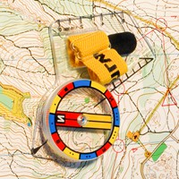

Bár a tájfutás (hivatalos nevén tájékozódási futás) nem egy olimpiai sportág, mégis egy nagyon összetett és nehéz sport. A futóknak mind fizikailag, mind technikailag felkészültnek kell lenniük, hiszen egyszerre kell térképet olvasva tájékozódniuk és minél gyorsabban teljesíteniük az adott pályát. A profi élversenyző sportolók mögött sok évnyi tapasztalat, gyakorlás és kemény fizikai felkészülés áll.
A legszebb benne mégis, hogy nem kell élversenyzőnek ,fittnek és felkészültnek lennünk, vagy versenygenünk másokkal, elég ha csak élvezzük a természetben töltött időt, a társaságot és a kihívást. A tájfutás szlogenje így szól: "A tájfutás családi zöld sport". Nagyon sokan járnak a hétvégi versenyekre családostul, a legtöbbüknek ez jelenti a kikapcsolódást, hasonlóan az idősebbekhez is, akik mind azt bizonyítják, hogy ők is képessek teljesíteni egy-egy hétvégi verseny alkalmával a számukra kiírt feladatot.
A versenyzőknek térkép és tájoló (iránytű) segítségével kell a térképen feltüntetett ellenőrzőpontokkal kijelölt pályán, a pontokat többnyire előírt sorrendben érintve, a legrövidebb idő alatt végigfutniuk. A versenyzők maguk választja meg az útvonalaikat az ellenőrzőpontok között. Speciális tájfutótérképet használnak a tájékozódás során. Általában 1:15 000-es vagy 1:10 000-es, srinten 1:4000-es méretarányú részletes topográfiai térképek ezek, speciális nemzetközi jelkulccsal. A verseny során erre a térképre nyomtatják a pályát is, illetve a felkeresendő ellenőrző pontok számát.
| 
Tájoló |
Erdei tájfutó térkép |

Városi tájfutó térkép |
Pontfogás dugókával |
Alapvetően ez egy egyéni sport, ahol a feladatot a versenyzőknek egyénileg kell megoldaniuk. Az egyéni verseny lehet nappali és éjszakai is, azon belül pedig lehet rövidtáv, ami általában városban rendezett esemény vagy középtáv és hosszútáv, mellyek pedig leginkább erdei versenyszámok. Nagyon izgalmasak tudnak lenni a csapat versenyek is, ahol főleg három fős csapat összeállításokról beszélhetünk, de négy, illetve öt fősek is előfordulhatnak. Magyarországon ezek a csapatversenyek láteznek országos bajnoksági sznten is: váltó, pontbegyűjtő, csapat, sprint váltó illetve egyesületi váltó.
Tájékozódási sportból több szakág is létezik. Ezek névszerint a tájfutáson kívül a tájkerékpár, a trail-o és a sítájfutás.
|
Sítájutás |
Trail-o |
Tájkerékpár |
Bővebben a magyar tájékozódási futószövetség oldalán tudsz informálódni: www.mtfsz.hu